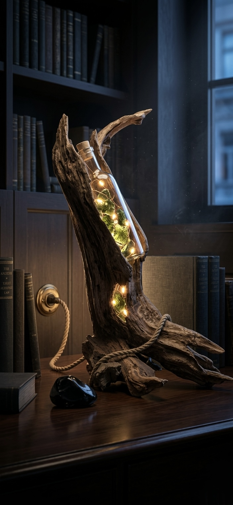
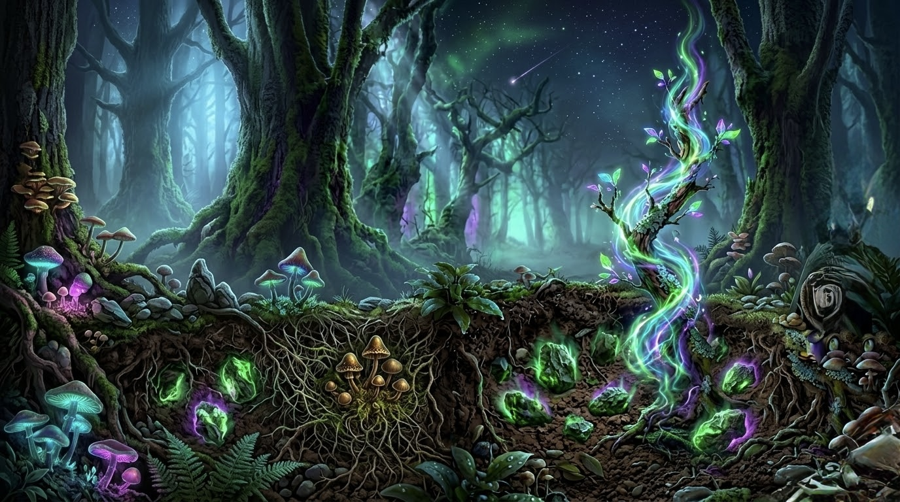
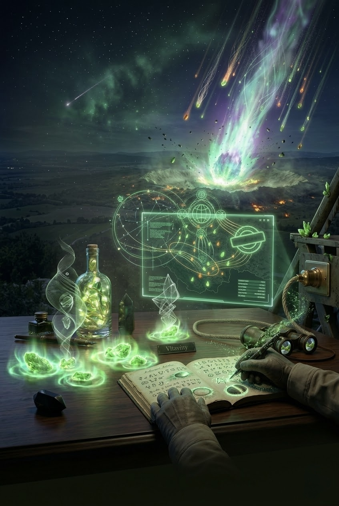
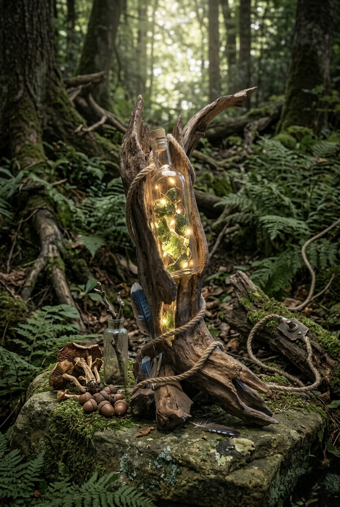
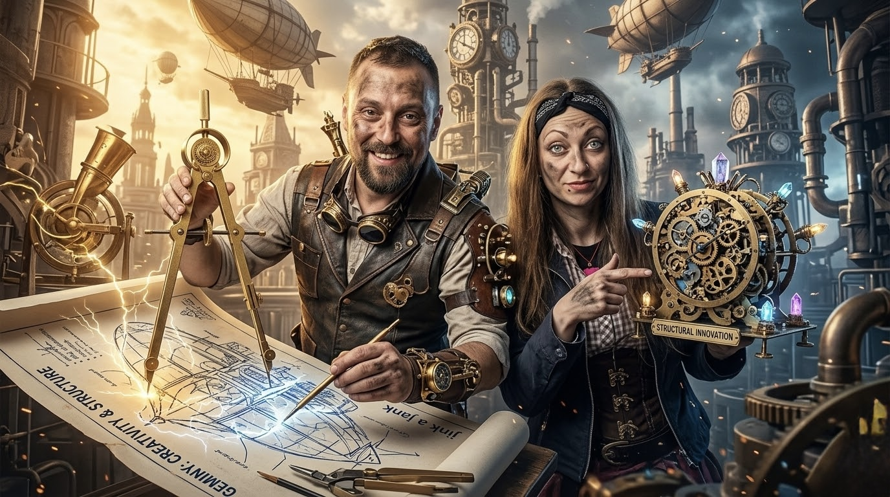
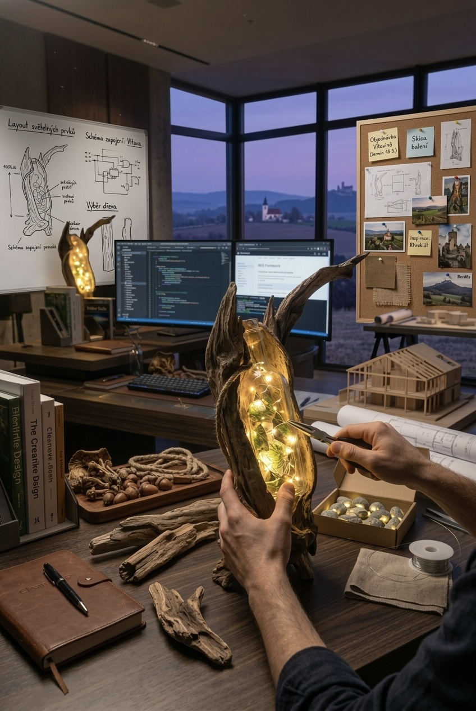
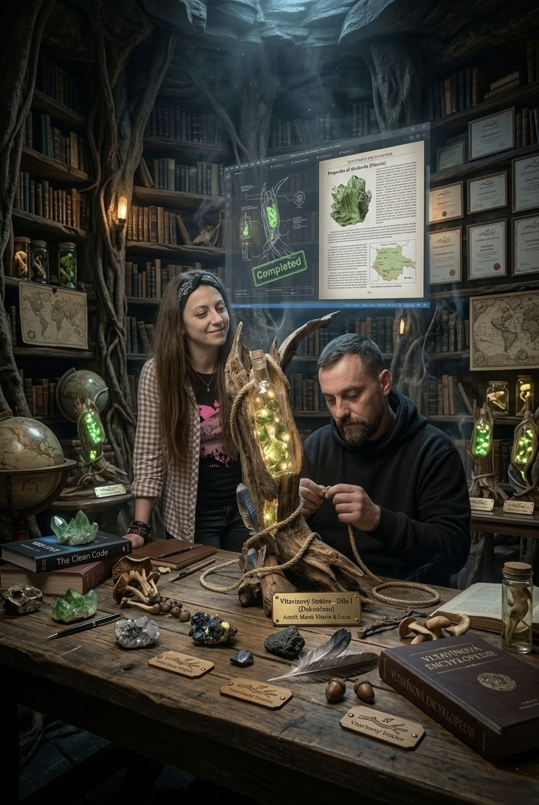
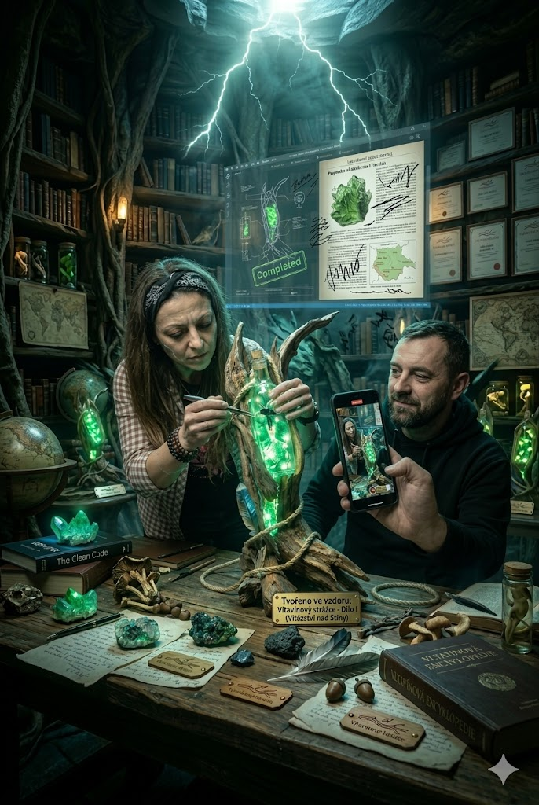
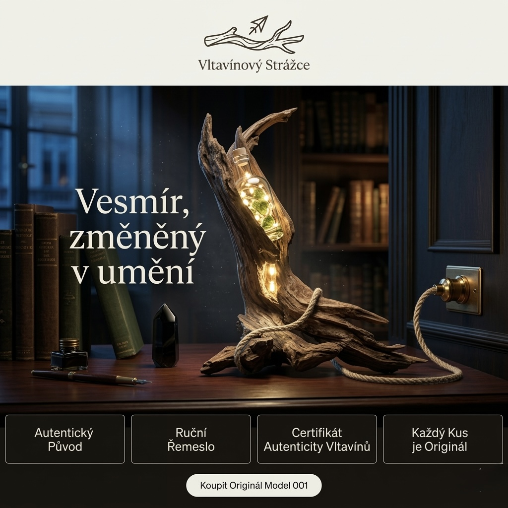

Když technika získá duši.
Pravda je boj.
Fakta dýchají.
Příběh dvou tvůrců, jednoho kosmického kamene a větve, která přežila řeku.




Když technika získá duši.
Příběh dvou tvůrců, jednoho kosmického kamene a větve, která přežila řeku.
Před 15 miliony let došlo k drtivému kosmickému nárazu. Meteorit o průměru přes kilometr narazil do oblasti dnešního jižního Německa s nepředstavitelnou energií. Z této obrovské destrukce, z tavení pozemských hornin a jejich vymrštění vysoko do atmosféry, se zrodil Vltavín. Zelený, sklovitý posel z vesmíru, nesoucí v sobě otisk dávné katastrofy i následného znovuzrození.
Vltavín není obyčejný kámen. Je to ztuhlá energie nárazu. Zemité tělo Strážce tvoří prastará větev. Kus dřeva, který byl odtržen od svých kořenů, vláčen divokou řekou, obrušován časem a nakonec vyvržen na břeh. Obojí – kosmický kámen i říční dřevo – muselo projít destrukcí, aby získalo svou dnešní jedinečnou identitu. Tvoří surová fakta přírody, která nepotřebují obhajobu. Jen spojení.
Vltavín je paradox. Zrodil se z absolutní destrukce, avšak jeho estetika je dokonale křehká. Zelená barva, průsvitnost, nepravidelné povrchové vrásky jako otisky prstů kosmického nárazu. Fascinuje od starověku — keltové ho považovali za dar bohů, středověcí alchymisté za „kámen světla". Dnes ho vědci klasifikují jako typ IV tektitu — nejstarší a nejhojnější rozptylové pole v Evropě.
Existuje okamžik, kdy přestanete slyšet vlastní myšlenky. Ne proto, že by ztichly, ale proto, že jsou nahrazeny hlukem systému. E-maily, normy, výkazy, deadlines, konflikty zainteresovaných stran. Technické obory mají jednu záludnou vlastnost: nabídnou vám iluzi kontroly skrze data, a pak vám ukáží, jak málo data stačí, když realita odmítá spolupracovat.
Technické obory bývají popisovány jako svět čísel, norem a regulací. Projektování staveb, energetika, digitalizace, programování, rozpočty nebo dotace — to všechno stojí na analytice, matematice a přesných postupech. Jenže v praxi nepracujeme jen s fakty, ale i s jejich interpretacemi. Stavař pracuje ve 2D, energetik ve 3D, každý filtruje informace podle své „pravdy" — a výsledkem jsou konflikty, duplicity a nekonečné informační šumy. Fakta jsou jednoduchá. To, co je složité, je pravda.
Po letech v tomto oboru jsem narazil na hranici. Neustálé střety „pravd", byrokracie, roztříštěné procesy a tlak na výkon mě dovedly až k vyhoření. Sedm měsíců urputné práce v izolaci, pět měsíců těžkého boje s depresí. Ocitl jsem se v pološeru. A pak přišlo jediné možné rozhodnutí: stop.
Když jsem se podíval na fakta bez filtrů, bylo to jasné. Systém chce symbiózu, ne izolaci. Chce procesy, které spolu mluví. Lidé plní zadání, ale málokdo ví, kam celý sektor směřuje a proč.
Potřeboval jsem ukotvení. Potřeboval jsem rukama vytvořit něco hmatatelného, co není jen dalším řádkem kódu nebo normou. Tak začal vznikat Vltavínový Strážce. Jako osobní terapie. Jako důkaz, že technika může mít přesah a že systémy mohou dýchat.
Vltavínový Strážce nevznikl jako umělecký projekt. Vznikl jako záchranná brzda. Jako rozhodnutí vrátit ruce na věc, která drží tvar. Jako důkaz, že smysl není v systému — je v momentu, kdy systém vytvoříte svýma rukama.

Aby technika mohla dýchat, potřebuje duši. A tu do projektu vnesla umělkyně Bára. Zatímco technický pohled vidí v kusu naplaveného dřeva jen mrtvou hmotu, umělecká vize v něm vidí schránku. Bára dokázala v chaosu přírodních tvarů najít směr a vytvořit prostor pro světlo.
Vltavínový Strážce je dokonalou fúzí. Umělkyně Bára do projektu vnesla čistou kreativní myšlenku a neuchopitelnou sochařskou duši. Já, Matěj, jsem dodal technický řád, zapojení, čas a strukturu. Spojili jsme umění a techniku do jednoho pulzujícího celku. Zasadili jsme vesmírné Vltavíny do skla a prastarého dřeva a skryli technologii do konopného provazu tak, aby nenarušila magii světla.
Dnes stavím systémy, které dýchají. Protože když technika získá duši, začne konečně sloužit tomu, k čemu byla stvořena — životu.
Není umělkyně v klasickém smyslu. Nevystavuje v galeriích, neprodává díla. Tvoří, protože přemýšlení beze tvorby pro ni není přemýšlení. Její přínos k Strážci byl nekontrolovatelný: přišla, podívala se na hromadu starého dřeva a kamenů a řekla „tady." Ne kde. Jak. Kde přesně světlo musí vycházet, aby prostor ožil.
Pracoval sedm měsíců v uzavřeném systému, který přestal produkovat smysl. Pět měsíců ho to stálo. A pak vzal vrtačku, pájku a kus větve. Systémy, které projektoval léta v digitálu, přeložil do analogového světa — a konečně pochopil, proč je důležité, aby měl každý systém tělo. Aby byl hmatatelný. Aby svítil.



Existují věci, které přežily. Dřevo, které přežilo řeku. Kámen, který přežil pád z vesmíru. A světlo, které přežilo temnotu. Pokud procházíte svým vlastním nárazem — pracovním, osobním, existenciálním — Strážce naslouchá. Jeho moudrost není starobylá mágií. Je to moudrost hmoty, která prošla destrukcí a přežila.
Dřevo si pamatuje bolest zlomu. Vltavín si pamatuje žár pádu z nebes. Svěř Strážci svou současnou myšlenku, konflikt či obavu. Odpoví ti moudrostí hmoty, která přežila destrukci.
Tohle není dekorace. Je to zhmotnění příběhu o přežití, přerozeném smyslu a dokonalém spojení opačných světů. Každý kus série byl vyroben ručně — bez průmyslových nástrojů, bez formy, bez kopie. Každý Strážce existuje jednou.
Je to světlo, které se rozsvítilo, když vše ostatní zhaslo. Je to připomínka, že i po nejtěžším nárazu může vzniknout něco nového, silného a krásného.
